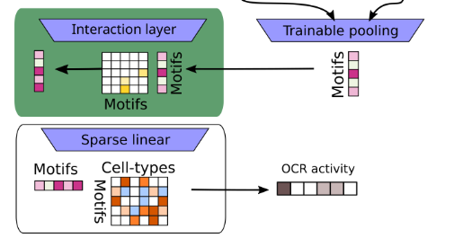
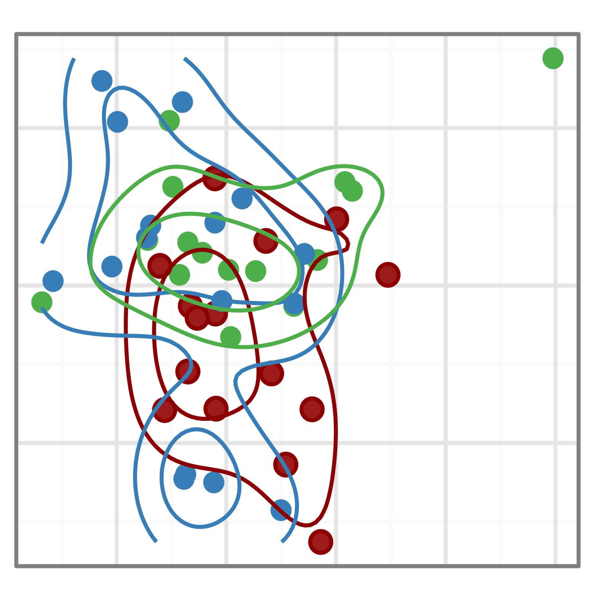

Functional genomic data (such as RNAseq or DNA methylation) are composed of many layers of overlapping signals that reflect the output of individual upstream pathways. We develop methods to automatically decouple, extract and name all biological latent variables present in a dataset.

Advances in neural networks have enabled models that accurately recapitulate complex input-output behavior of biological systems. We can now predict context specific DNA activity and gene expression directly from sequence. However, top performing models have millions of parameters and their internal representation is not interpretable. We seek to develop models with interpretable parameters that do not sacrifice performance.

In collaboration with Nathan Clark's lab, we develop methods to uncover the relationships between evolutionary forces and phenotypes. Using our Relative Evolutionary Rate (RERconverge) method, we have identified genetic elements linked to subterranean and marine habitats, body mass and longevity, hair density, and more. This approach provides a powerful, complementary way to computationally map genotype-phenotype relationships.

Genomic data is often noisy and complex making it difficult to identify signals relevant to the underlying molecular mechanisms. We develop methods that combine machine learning techniques and insights about the biological process to learn data representation tailored for specific downstream tasks.

We are working with several UPMC research teams to use single-cell assay technologies to understand the role of the tumor micro-environment in tumor progression and treatment response.

Our group is part of the Molecular Transducers of Physical Activity Consortium (MoTraPAC) . This is a large study looking at the effects of exercies through multiple genomic assays.

We are part of the Epigenetic CHaracterization and Observation (ECHO) . The program is building a man-portable device that analyzes an individual’s epigenetic “fingerprint” to potentially reveal a detailed history of that individual’s exposure to infectious and chemical agents.